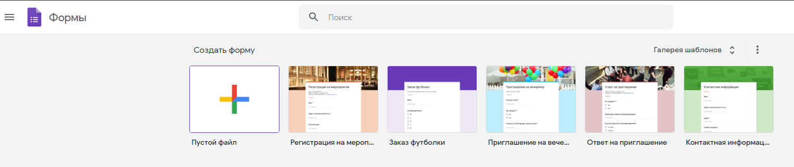
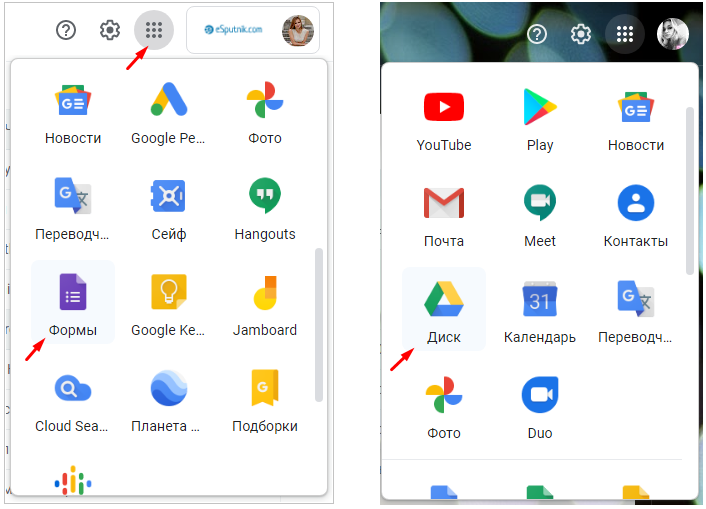
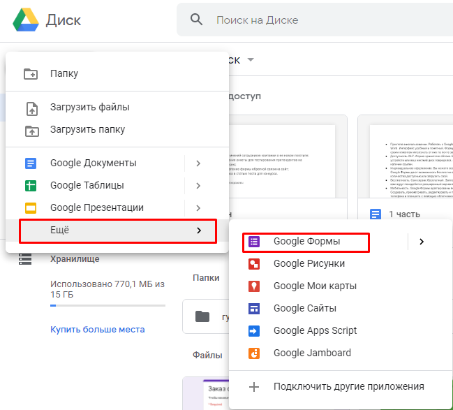
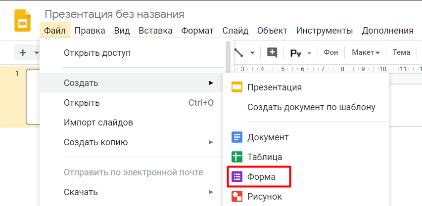
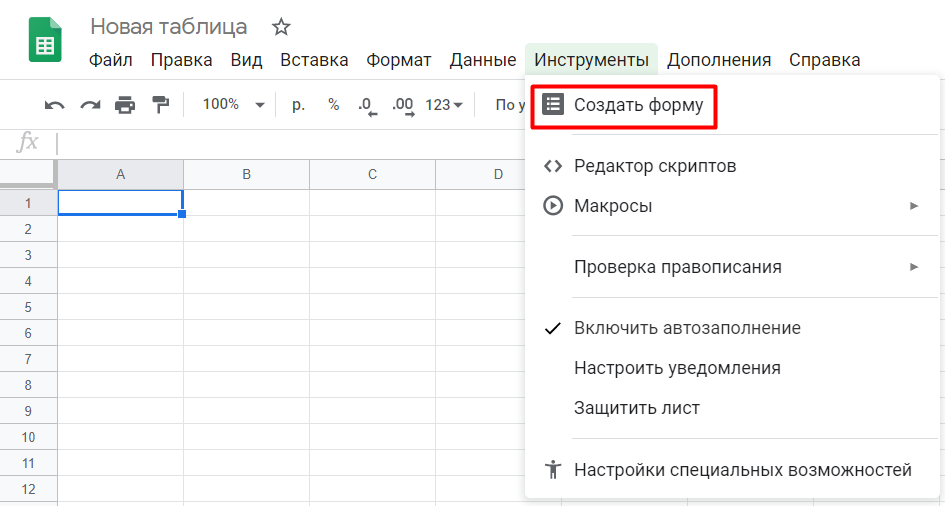

Как создать Гугл форму
Перейти к созданию гугл-форм можно несколькими способами.
Из адресной строки браузера
Самый простой способ создать Гугл Форму – это прямаая ссылка https://docs.google.com/forms
Перейдя по ссылке , вы окажетесь на главной странице, где сможете выбрать один из шаблонов или создать свой пустой файл.
Чтобы автоматически создать новую пустую форму, впишите forms.new в адресную строку любого браузера и нажмите Enter .
Из почты Gmail и стартовой страницы Google
Нажмите на иконку “Приложения Google” и в появившемся меню выберите значок “Формы” . В некоторых аккаунтах может не быть этого значка по умолчанию, в таком случае необходимо выбрать пункт “Диск” .
Из Google Диска
Нажмите в левом углу на кнопку с плюсиком “Создать” и в раскрывающемся меню выберите нужный пункт.
Из сервисов офисного пакета Google
Ссылка на Google Forms есть в документах, таблицах и презентациях: нажмите Файл → Создать → Форма , чтобы создать новую пустую форму.
Если вы уже работаете с таблицей Google и вам необходимо создать форму, которая будет автоматически с ней связываться, просто нажмите Инструменты → Создать форму . Ответы формы будут сохраняться в этой таблице отдельным листом без дополнительных настроек.
